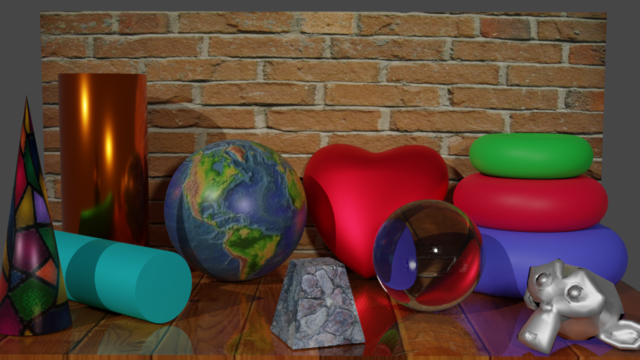
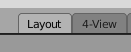
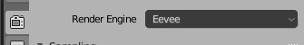
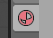
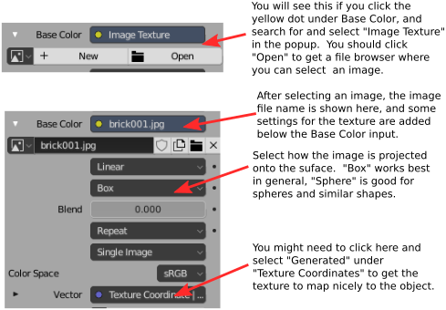

CS 424: Computer Graphics, Fall 2017
Blender Lab 1: Blender Basics
This is the first of (probably) four labs that are planned using the 3D modeling and animation program, Blender. This introductory lab is mainly to introduce you to the program's interface and to let you work interactively with objects in three dimensions and their basic material properties.
It would be very useful that you read Section B.1 in Appendix B of the textbook before coming to the lab. It covers some aspects of the Blender interface that I will not repeat here! But I will also demonstrate the program in class to help you prepare for the lab, and some incomplete instructions are given below.
Remember to save your work occasionally while you are working on your scene. Note that Blender will automatically keep a backup file, with file extension .blend1, when you save a new version. If the program crashes, you can often recover much of your work, even if it was not saved, using the "Recover" submenu in the "File" menu.
To turn in your work for this lab, you should submit both the Blender file stage.blend and a rendered image of your completed scene. Use a name like "blender.png" for the rendered image. You should copy those files into your homework folder on /classes/cs424/homework by Monday, September 27, one week after the lab. You can put the files in a folder named "blender" if you want, but that is not required. The file should be turned in one week after the lab, on Monday, September 27.
Grading for Blender work will follow the same guidelines as for Gimp and Inkscape. (The grading will be along the lines of: "Not done" for an F; "Minimal effort and incomplete" for a D; "Minimal effort" for a C; "Everything OK" for a B; or "Excellent" for an A. "Excellent" means that your work shows substantial and thoughtful effort, a willingness to investigate and experiment with Blender features, and some attention to aesthetics. For Blender, even more than with the other programs, you should try to produce work that looks good.)
Populate the Stage!
You should start with a copy of the file stage.blend, which you can get from /classes/cs424 or download using the link. Start Blender 2.93 from the "Graphics" section of the application menu, and open the file using the "Open" command in the "File" menu. (Note that simply double-clicking a .blend file on the lab computers will not work. However, you can make it work by right-clicking the .blend file and using "Open With..." / "Other Application". Enter /opt/blender-2.93/blender as the path to the application, or navigate to that file using the file browser. Click the "Set as Default" button, and from then on, double-clicking a .blend file will open it with Blender 2.93.)
The scene in stage.blend is an empty "stage". Initially, you see the stage in the view from the camera. See Section B.1 for more information on viewing and how to change the view!
Your job is to place a variety of objects on the stage. The objects should look like they are lying or standing on the stage, or leaning up against the wall, or supported by some other object that is on the stage. Maybe hanging on the wall would be OK, depending on what the object is. Here is a picture of my completed stage project. The floor of the stage already has a wood texture applied in the original stage.blend.

You do not necessarily need quite as many objects as I used, but you should fill the stage to some extent. Use mostly "Mesh" objects, with maybe one or two exceptions. (The only non-mesh object on my stage is the heart, which is made from a NURBS Sphere, under "Surface" in the "Add" menu.) The objects should use a variety of materials. Some of them should use image textures. At least one must be modified using Edit Mode. You should also apply a material to the wall at the back, with or without a texture. Some suggestions and more information are given below.
 I added another "screen" to stage.blend where you can see four different views of the same scene. To get to it, click the button labeled 4-view in the line of scene buttons at the top of the window. The original screen was called "Layout." Click the "Layout" button to get back to the original screen. The 4-view screen includes views from the top, left, and front, as well as the camera view. You can use this screen to help you position an object in 3D space more easily.
Note that lighting for the scene is already set up; you do not need to modify it. Your only job is to add objects to the scene, give them materials, and modify at least one of them in Edit Mode.
About Render Engines. Blender has two general-purpose "render engines": Eevee and Cycles. A render engine is the part of the program that produces the rendered image of a scene. Eevee is a faster renderer that basicaly does OpenGL-style rendering with some extra tricks added to handle things like shadows, reflections, and transparency, but only approximately. Cycles uses a completely different rendering technique called path-tracing that gives physically accurate results but takes significantly longer to do it. Eevee is set as the render engine in stage.blend, but I encourage you to use Cycles for the final rendered image. To switch from one render engine to another, go to the Render Properties buttons, in the lower right section of the Blender window, and change the setting of "Render Engine":

If you want to see what difference this can make, compare the Cycles version to the Eevee version of my scene. The Cycles version has much nicer reflections, and I really don't know what Eevee is doing with the glass sphere. (Possibly I have some Eevee setting wrong.)
{kind=link}
{kind=link}
About Adding Objects. Objects are added to the scene using the "Add" menu, which you can also pop up at the position of the mouse by typing "Shift-A". (Always remember that key presses only go the part of the window that contains the mouse cursor!). Objects are added at the position of the "3D Cursor," which is at (0,0,0) in stage.blend. It is probably best to leave the 3D Cursor in that position and to move objects around after adding them. When you add an object, a control briefly appears in the window where you can set some properties of the object, such as the number of slices and stacks in a sphere. You don't get another chance to change those properties. After adding an object, you will need to transform it, using either manipulators or the G, S, and R keys. Details are in Section B.1.1,
About Smooth Shading. By default, Mesh objects have flat sides and look "faceted." If you want a Mesh object to look smooth, select the object and choose "Shade Smooth" from the "Object" menu. Alternatively, select the object and then right-click on the window to get a popup menu with the "Shade Smooth" command right at the top. For example, the monkey head looks very different when you use smooth shading than it does when you use the default flat shading.
 About Materials. To set the material used for the surface of an object, you need to use the Material Properties controls. To see the material for an object, select the object, and use the Material tab in the lower right section of the window. If the object does not yet have a material, there will be a "New" button for adding one. For material in this lab, use only the default "Principled BSFD." In general (except for glass objects), you will need to set only the "Base Color", "Metallic", and "Roughness" properties. In my scene, the copper-colored cylinder has a very high "Metalic" value and a very low "Roughness" value. The monkey head, which I tried to make look like pewter, has high "Metalic" and medium "Roughness." The cyan cylinder and stack of three torus shapes have a low "Metalic" value.
About Image Textures. An image texture is an image that is sort-of painted onto a surface. An image texture can be added to an object using the "Base Color" property of the Principled BSFD:

The folder /classes/cs424/textures contains several images that you can use as image textures, including all the images used in my scene. Or find your own images.
Note that you might have to adjust some properties of the texture to get the image to map nicely to the surface. (But the earth.jpg image maps nicely to a UVSphere with no modifications.)
{kind=link}
About Edit Mode. You are required to do something with Edit Mode. In the sample image, the frustum was made from a Mesh Cube. To make it, I put the cube into edit mode, deselected all the vertices (with the A key), selected the vertices of the top face, and then scaled down the selected vertices (using the S key). The heart that is leaning against the back wall was made by modifying a "NURBS Sphere" in Edit Mode. (A NURBS surface is something like a Bezier curve, in that it has control points that influence the shape of the surface but do not lie on the surface. In Edit mode, you can reshape the surface by modifying the positions of the control points).
About Glass. You are not required to have a glass object, but it can be cool. For clear glass, it should only be necessary to increase the "Transmission" property of the Principled BSDF to something close to 1.0, and reduce the "Roughness" to something very close to zero. That will, in fact, work with the Cycles render engine. But Eevee needs some additional settings (and I still can't get the refraction to work properly). In the Material Properties of the glass object, you have to scroll down to the "Settings" section and turn on the "Screen Space Reflection" option. You can also set the "Shadow Mode" to "Alpha Hashed" to get the glass object to cast more glass-like shadows. (You also need to change some settings in the Eevee renderer, but this has already been done in stage.blend: In the Render Properties for Eevee, "Screen Space Reflections" must be turned on, and under that, "Refraction" must be turned on.)
The next Blender lab, in a few weeks, will concentrate on more advanced modeling, using techniques from Section B.2